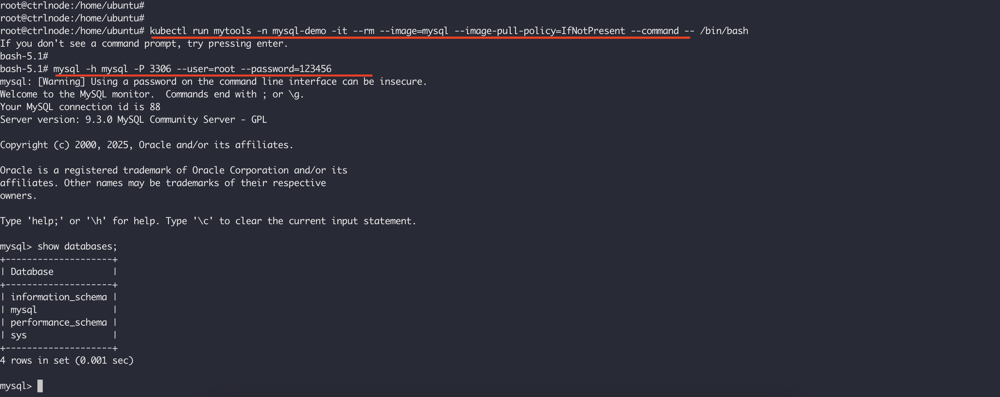
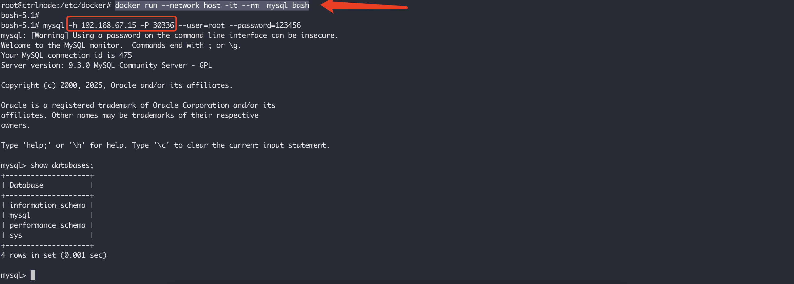

本文描述如何在k8s集群中部署一个MySQL服务，前提请看K8S集群部署 创建一个测试集群。如我本地，仅有一个控制节点：
1 2 3 root@ctrlnode:/home/ubuntu# kubectl get nodes NAME STATUS ROLES AGE VERSION ctrlnode Ready control-plane 72m v1.28.15
这里创建的目录将被用于PV卷创建，MySQL服务产生的数据也将保存在这个目录下。如果目录变更，请同步修改后续的PV卷的hostpath路径：
mkdir -p /mnt/k8s/mysql-demo/mysql-data
为了让Pod能调度到这个和PV强绑定的节点上来，给节点打个标签pvtype=hostpath：
1 2 3 4 5 6 7 8 9 10 11 12 13 14 15 16 $ kubectl label nodes ctrlnode pvtype=hostpath node/ctrlnode labeled $ kubectl describe node ctrlnode Name: ctrlnode Roles: control-plane,master Labels: beta.kubernetes.io/arch=amd64 beta.kubernetes.io/instance-type=k3s beta.kubernetes.io/os=linux kubernetes.io/arch=amd64 kubernetes.io/hostname=ctrlnode kubernetes.io/os=linux node-role.kubernetes.io/control-plane=true node-role.kubernetes.io/master=true node.kubernetes.io/instance-type=k3s pvtype=hostpath ....
将下面的模板保存为 mysql.yaml，然后从文件创建MySQL服务：
1 2 3 4 5 6 7 8 9 10 11 12 13 14 15 16 17 18 19 20 21 22 23 24 25 26 27 28 29 30 31 32 33 34 35 36 37 38 39 40 41 42 43 44 45 46 47 48 49 50 51 52 53 54 55 56 57 58 59 60 61 62 63 64 65 66 67 68 69 70 71 72 73 74 75 76 77 78 79 80 81 82 83 84 85 86 87 88 89 90 91 92 93 94 95 96 97 98 99 100 101 102 103 104 105 106 107 108 109 110 111 112 113 114 115 116 117 118 119 120 121 122 123 124 125 126 127 128 129 130 131 132 133 134 135 136 137 138 139 140 141 142 143 144 145 146 147 apiVersion: v1 kind: Namespace metadata: name: mysql-demo --- apiVersion: v1 kind: ConfigMap metadata: name: mysql-config namespace: mysql-demo labels: app: mysql data: my.cnf: |- [client] default-character-set=utf8mb4 [mysql] default-character-set=utf8mb4 [mysqld] max_connections = 2000 secure_file_priv=/var/lib/mysql sql_mode=STRICT_TRANS_TABLES,NO_ZERO_IN_DATE,NO_ZERO_DATE,ERROR_FOR_DIVISION_BY_ZERO,NO_ENGINE_SUBSTITUTION --- apiVersion: v1 kind: PersistentVolume metadata: name: mysql namespace: mysql-demo labels: app: mysql spec: storageClassName: manual capacity: storage: 10Gi accessModes: - ReadWriteOnce persistentVolumeReclaimPolicy: Retain hostPath: path: "/mnt/k8s/mysql-demo/mysql-data" --- apiVersion: v1 kind: PersistentVolumeClaim metadata: name: mysql namespace: mysql-demo spec: accessModes: - ReadWriteOnce storageClassName: manual resources: requests: storage: 1Gi selector: matchLabels: app: mysql --- apiVersion: v1 kind: Service metadata: name: mysql namespace: mysql-demo labels: app: mysql spec: type: NodePort ports: - name: mysql port: 3306 targetPort: 3306 nodePort: 30336 selector: app: mysql --- apiVersion: apps/v1 kind: StatefulSet metadata: name: mysql namespace: mysql-demo labels: app: mysql spec: replicas: 1 selector: matchLabels: app: mysql template: metadata: labels: app: mysql spec: containers: - name: mysql image: mysql ports: - containerPort: 3306 env: - name: MYSQL_ROOT_PASSWORD value: "123456" resources: limits: cpu: 1000m memory: 512Mi requests: cpu: 1000m memory: 512Mi livenessProbe: initialDelaySeconds: 30 periodSeconds: 10 timeoutSeconds: 5 successThreshold: 1 failureThreshold: 3 exec: command: ["mysqladmin" , "-uroot" , "-p${MYSQL_ROOT_PASSWORD}" , "ping" ] readinessProbe: initialDelaySeconds: 10 periodSeconds: 10 timeoutSeconds: 5 successThreshold: 1 failureThreshold: 3 exec: command: ["mysqladmin" , "-uroot" , "-p${MYSQL_ROOT_PASSWORD}" , "ping" ] volumeMounts: - name: data mountPath: /var/lib/mysql - name: config mountPath: /etc/mysql/conf.d/my.cnf subPath: my.cnf - name: localtime readOnly: true mountPath: /etc/localtime volumes: - name: data persistentVolumeClaim: claimName: mysql - name: config configMap: name: mysql-config - name: localtime hostPath: type: File path: /etc/localtime
执行命令：
1 2 3 4 5 6 7 root@ctrlnode:/home/ubuntu/mysql-test# kubectl apply -f mysql.yaml namespace/mysql-demo created configmap/mysql-config created persistentvolume/mysql created persistentvolumeclaim/mysql created service/mysql created statefulset.apps/mysql created
上面的模板还创建了NodePort类型的MySQL服务，所以在集群之内进行登录。首先创建一个临时的客户端容器：
kubectl run mytools -n mysql-demo -it --rm --image=mysql --image-pull-policy=IfNotPresent --command – /bin/bash
然后通过mysql名字访问数据库：
mysql -h mysql -P 3306 --user=root --password=123456

NodePort类型的服务可以从k8s集群外进行访问，这里在集群之外使用docker创建个MySQL客户端进行验证。首先查看MySQL服务的暴露在节点上的端口：
这里使用docker创建的MySQL客户端和K8S集群就不在同一个网络了，是在集群之外访问，需要使用节点的IP地址：
1 2 3 4 5 6 7 8 9 10 root@ctrlnode:/home/ubuntu/mysql-test# ifconfig enp0s1 enp0s1: flags=4163<UP,BROADCAST,RUNNING,MULTICAST> mtu 1500 inet 192.168.67.15 netmask 255.255.255.0 broadcast 192.168.67.255 inet6 fe80::5054:ff:fe4d:9547 prefixlen 64 scopeid 0x20<link> inet6 fd96:5cad:8347:c4a6:5054:ff:fe4d:9547 prefixlen 64 scopeid 0x0<global> ether 52:54:00:4d:95:47 txqueuelen 1000 (Ethernet) RX packets 977281 bytes 1235853010 (1.2 GB) RX errors 0 dropped 0 overruns 0 frame 0 TX packets 245325 bytes 24153583 (24.1 MB) TX errors 0 dropped 0 overruns 0 carrier 0 collisions 0
接下来使用docker创建一个临时的MySQL客户端容器：
docker run --network host -it --rm mysql bash
